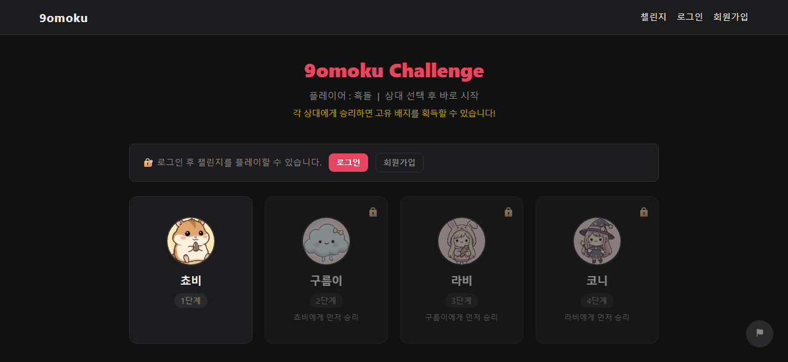

9omoku
브라우저에서 바로 즐기는 무료 온라인 오목 게임입니다.

소개
회원가입 없이 비회원으로 바로 입장할 수 있고, 계정을 만들면 전적과 레벨, 프로필을 관리할 수 있습니다.
주요 기능
- 실시간 멀티플레이어 대국
- 방 만들기, 비공개 방, 아무 방이나 바로 입장
- 전적, 레벨, 프로필 관리
- 챌린지: 네 단계의 상대를 차례로 이기면 상대별 고유 배지 획득
브라우저에서 바로 즐기는 무료 온라인 오목 게임입니다.

회원가입 없이 비회원으로 바로 입장할 수 있고, 계정을 만들면 전적과 레벨, 프로필을 관리할 수 있습니다.